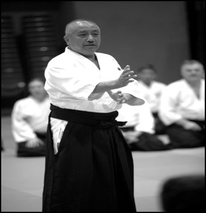
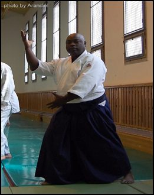
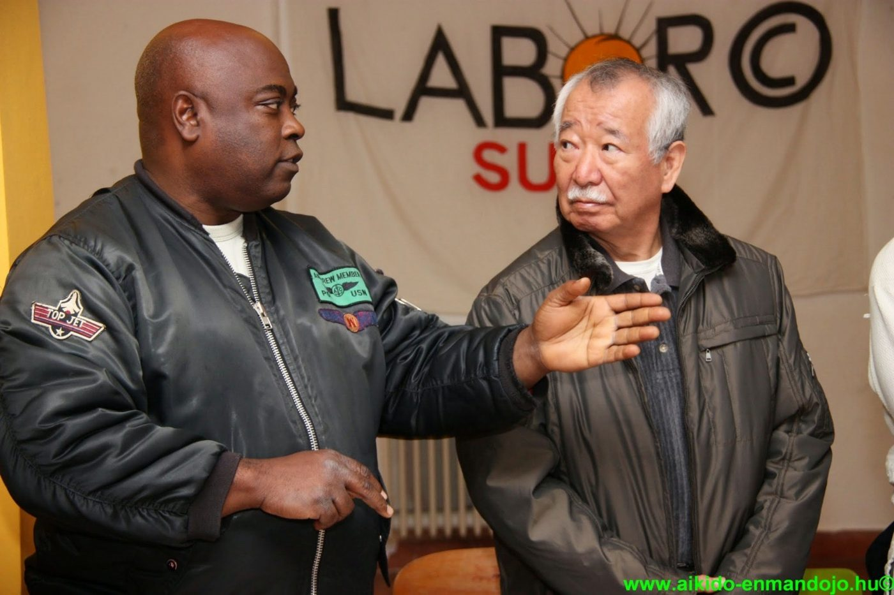
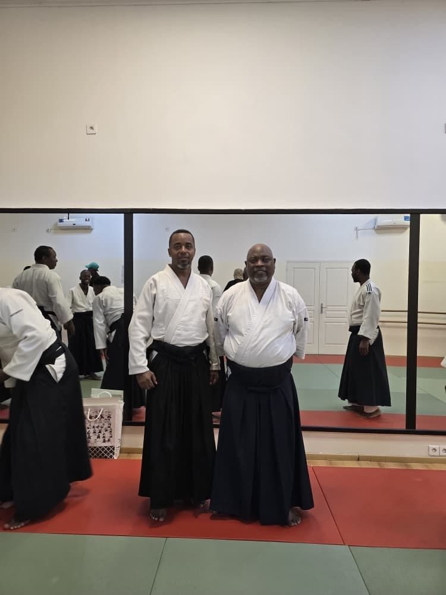
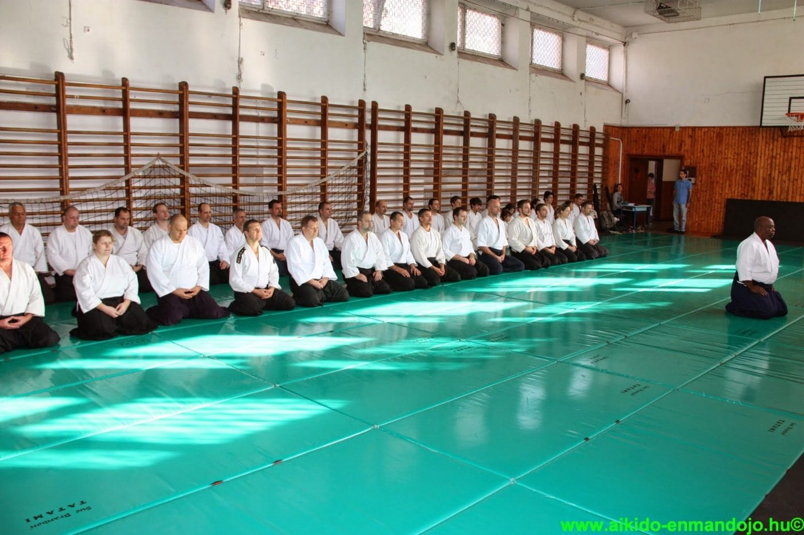
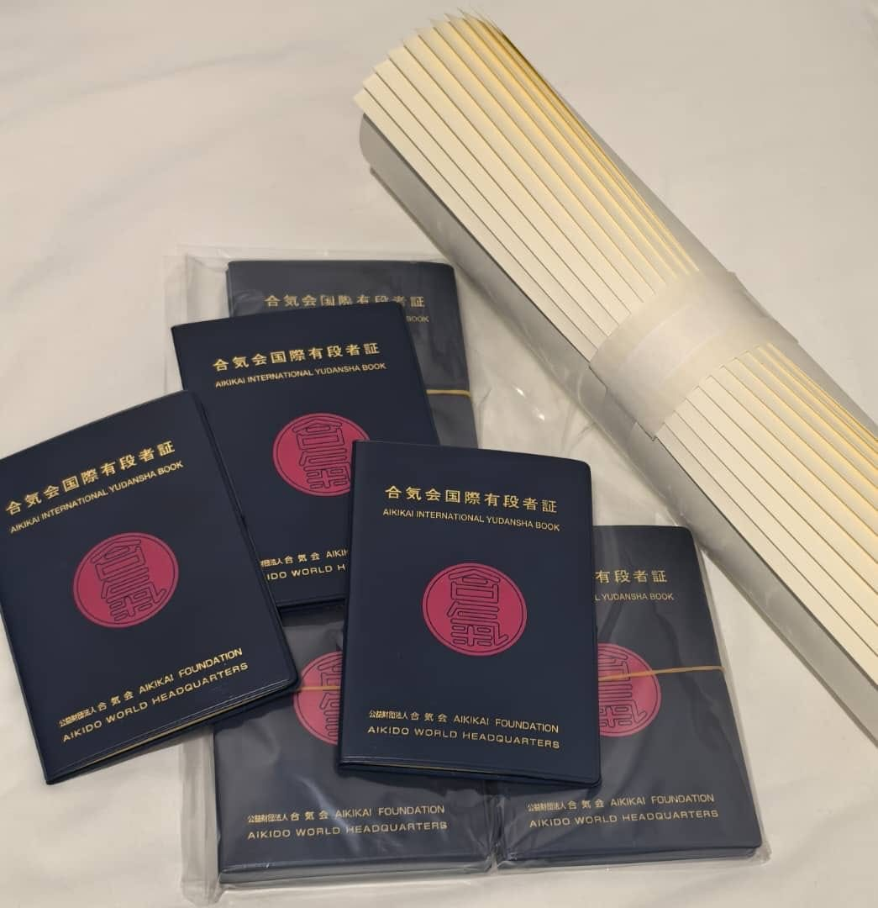
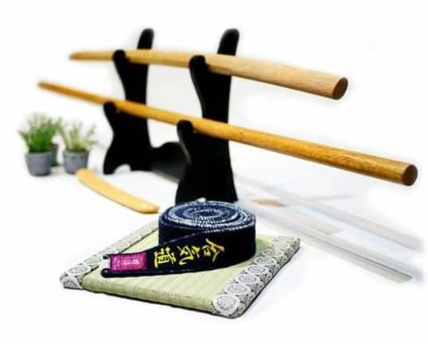
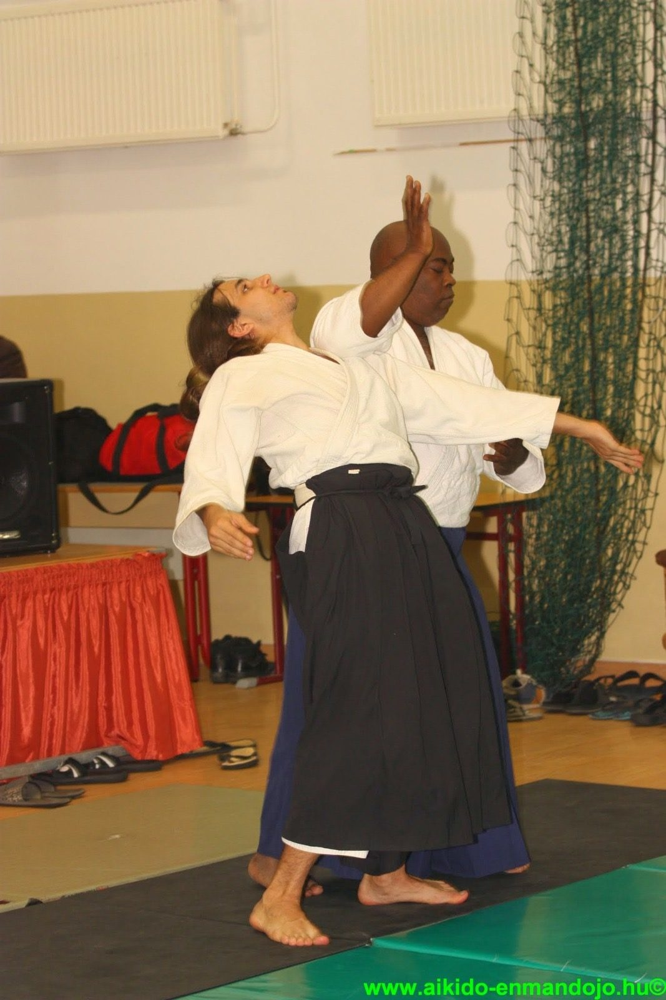
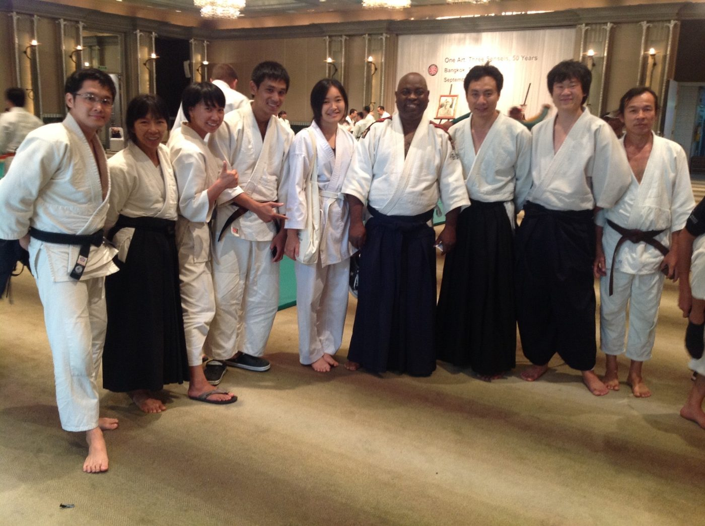
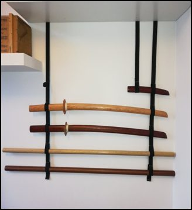

一
合氣
Morihei Ueshiba
Fondateur de l’aïkido. Le nom de cet art martial est adopté en 1942. Il laisse un enseignement fondé sur l’harmonie et le respect du partenaire.
Le Dojo Mas Fujita transmet l’aïkido de l’Aïkikaï de Tokyo, dans la lignée de Masatake Fujita Shihan, sous la direction technique de Michel GOLLO Shihan, 7e Dan.
De Tokyo à Brazzaville, en passant par Budapest : une chaîne ininterrompue de maître à élève, fondée sur l’harmonie et le respect du partenaire.
Fondateur de l’aïkido. Le nom de cet art martial est adopté en 1942. Il laisse un enseignement fondé sur l’harmonie et le respect du partenaire.

Élève du fondateur dès 1956 au Hombu Dojo, il transmet l’aïkido à l’international. Maître de Michel GOLLO, il donne son nom à notre dojo.

Élève de Masatake Fujita, membre de la C3A et Directeur Technique, il assure la transmission de cet enseignement et guide les pratiquants.

Dans les années 1980, il participe au développement de l’aïkido en Hongrie et contribue à former les premiers pratiquants. Les visites de Fujita Shihan accompagnent cette transmission.
Fondation de la fédération hongroise Aïkikaï.

Le premier objectif : devenir un partenaire attentif. Observer la démonstration, travailler avec mesure et demander une correction : chaque cours construit des bases solides.
Les rôles s’échangent pour apprendre ensemble.
Le côté d’honneur, repère pour le salut.
Devant / derrière.
Droite / gauche.
Deux formes complémentaires d’une technique.
Saluer le côté d’honneur à l’entrée et à la sortie du tatami, puis l’enseignant et les partenaires selon le protocole du dojo.
Le salut debout.
Le salut à genoux.
Tenue et pieds propres, ongles courts, bijoux retirés.
Informer l’enseignant pour entrer en retard ou quitter le tatami.

Onegai shimasu
Pour commencer à travailler ensemble.
Arigatō gozaimashita
Pour remercier à la fin.
Retenir quelques mots pour suivre les consignes. La démonstration de l’enseignant guide toujours l’exécution.
Chaque grade marque une étape de l’apprentissage. Les Kyu se comptent à rebours, jusqu’au 1er Kyu. Certains cursus commencent au 6e Kyu, d’autres au 5e.
Saluts, garde, ukemi simples.
Déplacements, saisies, premiers contrôles.
Plusieurs attaques et formes.
Posture, déplacement, technique.
Distance, rythme, continuité.
Précision et autonomie.
Blanche : généralement durant les Kyu. Noire : dès le 1er Dan. Les couleurs éventuelles et le port du hakama dépendent du cursus et de l’accord de l’enseignant.
Choisissez un grade pour voir les prérequis et le contenu de l’examen, du 5e Kyu au 4e Dan (Yondan).

Les règlements doivent se faire avant le 5 de chaque mois.
Frais d’adhésion au dojo, une seule fois.
Pour commencer à pratiquer dès le premier cours.
Deux cours par semaine : mardi et jeudi, 18h45 – 20h30.
À régler avant le 5 du mois.




Mardi ou jeudi, à 18h45. Observez un cours et présentez-vous à l’enseignant.
Complétez le formulaire : il s’envoie directement au dojo par WhatsApp. Vous pouvez aussi remplir la fiche papier au dojo.
35 000 FCFA (inscription + caution de 2 mois), puis 15 000 FCFA par mois avant le 5.
Onegai shimasu ! Votre parcours commence au 6e ou 5e Kyu.